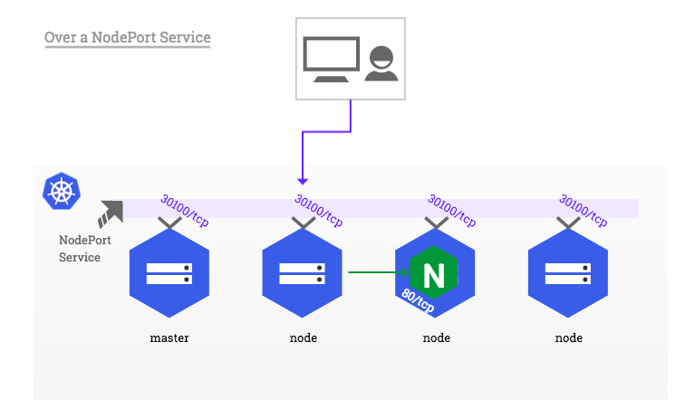
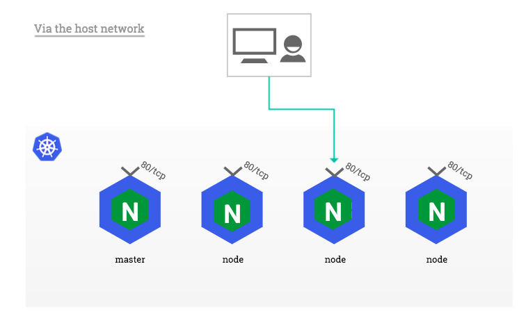

Bare-metal considerations¶
In traditional cloud environments, where network load balancers are available on-demand, a single Kubernetes manifest suffices to provide a single point of contact to the NGINX Ingress controller to external clients and, indirectly, to any application running inside the cluster. Bare-metal environments lack this commodity, requiring a slightly different setup to offer the same kind of access to external consumers.


The rest of this document describes a few recommended approaches to deploying the NGINX Ingress controller inside a Kubernetes cluster running on bare-metal.
A pure software solution: MetalLB¶
MetalLB provides a network load-balancer implementation for Kubernetes clusters that do not run on a supported cloud provider, effectively allowing the usage of LoadBalancer Services within any cluster.
This section demonstrates how to use the Layer 2 configuration mode of MetalLB together with the NGINX
Ingress controller in a Kubernetes cluster that has publicly accessible nodes. In this mode, one node attracts all
the traffic for the ingress-nginx Service IP. See Traffic policies for more details.

Note
The description of other supported configuration modes is off-scope for this document.
Warning
MetalLB is currently in beta. Read about the Project maturity and make sure you inform yourself by reading the official documentation thoroughly.
MetalLB can be deployed either with a simple Kubernetes manifest or with Helm. The rest of this example assumes MetalLB was deployed following the Installation instructions.
MetalLB requires a pool of IP addresses in order to be able to take ownership of the ingress-nginx Service. This pool
can be defined in a ConfigMap named config located in the same namespace as the MetalLB controller. In the simplest
possible scenario, the pool is composed of the IP addresses of Kubernetes nodes, but IP addresses can also be handed out
by a DHCP server.
Example
Given the following 3-node Kubernetes cluster (the external IP is added as an example, in most bare-metal environments this value is <None>)
$ kubectl get node NAME STATUS ROLES EXTERNAL-IP host-1 Ready master 203.0.113.1 host-2 Ready node 203.0.113.2 host-3 Ready node 203.0.113.3
After creating the following ConfigMap, MetalLB takes ownership of one of the IP addresses in the pool and updates
the loadBalancer IP field of the ingress-nginx Service accordingly.
apiVersion: v1 kind: ConfigMap metadata: namespace: metallb-system name: config data: config: | address-pools: - name: default protocol: layer2 addresses: - 203.0.113.2-203.0.113.3
$ kubectl -n ingress-nginx get svc NAME TYPE CLUSTER-IP EXTERNAL-IP PORT(S) default-http-backend ClusterIP 10.0.64.249 <none> 80/TCP ingress-nginx LoadBalancer 10.0.220.217 203.0.113.3 80:30100/TCP,443:30101/TCP
As soon as MetalLB sets the external IP address of the ingress-nginx LoadBalancer Service, the corresponding entries
are created in the iptables NAT table and the node with the selected IP address starts responding to HTTP requests on
the ports configured in the LoadBalancer Service:
$ curl -D- http://203.0.113.3 -H 'Host: myapp.example.com' HTTP/1.1 200 OK Server: nginx/1.15.2
Tip
In order to preserve the source IP address in HTTP requests sent to NGINX, it is necessary to use the Local
traffic policy. Traffic policies are described in more details in Traffic policies as
well as in the next section.
Over a NodePort Service¶
Due to its simplicity, this is the setup a user will deploy by default when following the steps described in the installation guide.
Info
A Service of type NodePort exposes, via the kube-proxy component, the same unprivileged port (default:
30000-32767) on every Kubernetes node, masters included. For more information, see Services.
In this configuration, the NGINX container remains isolated from the host network. As a result, it can safely bind to
any port, including the standard HTTP ports 80 and 443. However, due to the container namespace isolation, a client
located outside the cluster network (e.g. on the public internet) is not able to access Ingress hosts directly on ports
80 and 443. Instead, the external client must append the NodePort allocated to the ingress-nginx Service to HTTP
requests.

Example
Given the NodePort 30100 allocated to the ingress-nginx Service
$ kubectl -n ingress-nginx get svc NAME TYPE CLUSTER-IP PORT(S) default-http-backend ClusterIP 10.0.64.249 80/TCP ingress-nginx NodePort 10.0.220.217 80:30100/TCP,443:30101/TCP
and a Kubernetes node with the public IP address 203.0.113.2 (the external IP is added as an example, in most
bare-metal environments this value is <None>)
$ kubectl get node NAME STATUS ROLES EXTERNAL-IP host-1 Ready master 203.0.113.1 host-2 Ready node 203.0.113.2 host-3 Ready node 203.0.113.3
a client would reach an Ingress with host: myapp.example.com at http://myapp.example.com:30100, where the
myapp.example.com subdomain resolves to the 203.0.113.2 IP address.
Impact on the host system
While it may sound tempting to reconfigure the NodePort range using the --service-node-port-range API server flag
to include unprivileged ports and be able to expose ports 80 and 443, doing so may result in unexpected issues
including (but not limited to) the use of ports otherwise reserved to system daemons and the necessity to grant
kube-proxy privileges it may otherwise not require.
This practice is therefore discouraged. See the other approaches proposed in this page for alternatives.
This approach has a few other limitations one ought to be aware of:
- Source IP address
Services of type NodePort perform source address translation by default. This means the source IP of a HTTP request is always the IP address of the Kubernetes node that received the request from the perspective of NGINX.
The recommended way to preserve the source IP in a NodePort setup is to set the value of the externalTrafficPolicy
field of the ingress-nginx Service spec to Local (example).
Warning
This setting effectively drops packets sent to Kubernetes nodes which are not running any instance of the NGINX Ingress controller. Consider assigning NGINX Pods to specific nodes in order to control on what nodes the NGINX Ingress controller should be scheduled or not scheduled.
Example
In a Kubernetes cluster composed of 3 nodes (the external IP is added as an example, in most bare-metal environments this value is <None>)
$ kubectl get node NAME STATUS ROLES EXTERNAL-IP host-1 Ready master 203.0.113.1 host-2 Ready node 203.0.113.2 host-3 Ready node 203.0.113.3
with a nginx-ingress-controller Deployment composed of 2 replicas
$ kubectl -n ingress-nginx get pod -o wide NAME READY STATUS IP NODE default-http-backend-7c5bc89cc9-p86md 1/1 Running 172.17.1.1 host-2 nginx-ingress-controller-cf9ff8c96-8vvf8 1/1 Running 172.17.0.3 host-3 nginx-ingress-controller-cf9ff8c96-pxsds 1/1 Running 172.17.1.4 host-2
Requests sent to host-2 and host-3 would be forwarded to NGINX and original client's IP would be preserved,
while requests to host-1 would get dropped because there is no NGINX replica running on that node.
- Ingress status
Because NodePort Services do not get a LoadBalancerIP assigned by definition, the NGINX Ingress controller does not update the status of Ingress objects it manages.
$ kubectl get ingress NAME HOSTS ADDRESS PORTS test-ingress myapp.example.com 80
Despite the fact there is no load balancer providing a public IP address to the NGINX Ingress controller, it is possible
to force the status update of all managed Ingress objects by setting the externalIPs field of the ingress-nginx
Service.
Warning
There is more to setting externalIPs than just enabling the NGINX Ingress controller to update the status of
Ingress objects. Please read about this option in the Services page of official Kubernetes
documentation as well as the section about External IPs in this document for more information.
Example
Given the following 3-node Kubernetes cluster (the external IP is added as an example, in most bare-metal environments this value is <None>)
$ kubectl get node NAME STATUS ROLES EXTERNAL-IP host-1 Ready master 203.0.113.1 host-2 Ready node 203.0.113.2 host-3 Ready node 203.0.113.3
one could edit the ingress-nginx Service and add the following field to the object spec
spec: externalIPs: - 203.0.113.1 - 203.0.113.2 - 203.0.113.3
which would in turn be reflected on Ingress objects as follows:
$ kubectl get ingress -o wide NAME HOSTS ADDRESS PORTS test-ingress myapp.example.com 203.0.113.1,203.0.113.2,203.0.113.3 80
- Redirects
As NGINX is not aware of the port translation operated by the NodePort Service, backend applications are responsible for generating redirect URLs that take into account the URL used by external clients, including the NodePort.
Example
Redirects generated by NGINX, for instance HTTP to HTTPS or domain to www.domain, are generated without
NodePort:
$ curl -D- http://myapp.example.com:30100` HTTP/1.1 308 Permanent Redirect Server: nginx/1.15.2 Location: https://myapp.example.com/ #-> missing NodePort in HTTPS redirect
Via the host network¶
In a setup where there is no external load balancer available but using NodePorts is not an option, one can configure
ingress-nginx Pods to use the network of the host they run on instead of a dedicated network namespace. The benefit of
this approach is that the NGINX Ingress controller can bind ports 80 and 443 directly to Kubernetes nodes' network
interfaces, without the extra network translation imposed by NodePort Services.
Note
This approach does not leverage any Service object to expose the NGINX Ingress controller. If the ingress-nginx
Service exists in the target cluster, it is recommended to delete it.
This can be achieved by enabling the hostNetwork option in the Pods' spec.
template: spec: hostNetwork: true
Security considerations
Enabling this option exposes every system daemon to the NGINX Ingress controller on any network interface, including the host's loopback. Please evaluate the impact this may have on the security of your system carefully.
Example
Consider this nginx-ingress-controller Deployment composed of 2 replicas, NGINX Pods inherit from the IP address
of their host instead of an internal Pod IP.
$ kubectl -n ingress-nginx get pod -o wide NAME READY STATUS IP NODE default-http-backend-7c5bc89cc9-p86md 1/1 Running 172.17.1.1 host-2 nginx-ingress-controller-5b4cf5fc6-7lg6c 1/1 Running 203.0.113.3 host-3 nginx-ingress-controller-5b4cf5fc6-lzrls 1/1 Running 203.0.113.2 host-2
One major limitation of this deployment approach is that only a single NGINX Ingress controller Pod may be scheduled on each cluster node, because binding the same port multiple times on the same network interface is technically impossible. Pods that are unschedulable due to such situation fail with the following event:
$ kubectl -n ingress-nginx describe pod <unschedulable-nginx-ingress-controller-pod> ... Events: Type Reason From Message ---- ------ ---- ------- Warning FailedScheduling default-scheduler 0/3 nodes are available: 3 node(s) didn't have free ports for the requested pod ports.
One way to ensure only schedulable Pods are created is to deploy the NGINX Ingress controller as a DaemonSet instead of a traditional Deployment.
Info
A DaemonSet schedules exactly one type of Pod per cluster node, masters included, unless a node is configured to repel those Pods. For more information, see DaemonSet.
Because most properties of DaemonSet objects are identical to Deployment objects, this documentation page leaves the configuration of the corresponding manifest at the user's discretion.

Like with NodePorts, this approach has a few quirks it is important to be aware of.
- DNS resolution
Pods configured with hostNetwork: true do not use the internal DNS resolver (i.e. kube-dns or CoreDNS), unless
their dnsPolicy spec field is set to ClusterFirstWithHostNet. Consider using this setting if NGINX is
expected to resolve internal names for any reason.
- Ingress status
Because there is no Service exposing the NGINX Ingress controller in a configuration using the host network, the default
--publish-service flag used in standard cloud setups does not apply and the status of all Ingress objects remains
blank.
$ kubectl get ingress NAME HOSTS ADDRESS PORTS test-ingress myapp.example.com 80
Instead, and because bare-metal nodes usually don't have an ExternalIP, one has to enable the
--report-node-internal-ip-address flag, which sets the status of all Ingress objects to the internal IP
address of all nodes running the NGINX Ingress controller.
Example
Given a nginx-ingress-controller DaemonSet composed of 2 replicas
$ kubectl -n ingress-nginx get pod -o wide NAME READY STATUS IP NODE default-http-backend-7c5bc89cc9-p86md 1/1 Running 172.17.1.1 host-2 nginx-ingress-controller-5b4cf5fc6-7lg6c 1/1 Running 203.0.113.3 host-3 nginx-ingress-controller-5b4cf5fc6-lzrls 1/1 Running 203.0.113.2 host-2
the controller sets the status of all Ingress objects it manages to the following value:
$ kubectl get ingress -o wide NAME HOSTS ADDRESS PORTS test-ingress myapp.example.com 203.0.113.2,203.0.113.3 80
Note
Alternatively, it is possible to override the address written to Ingress objects using the
--publish-status-address flag. See Command line arguments.
Using a self-provisioned edge¶
Similarly to cloud environments, this deployment approach requires an edge network component providing a public entrypoint to the Kubernetes cluster. This edge component can be either hardware (e.g. vendor appliance) or software (e.g. HAproxy) and is usually managed outside of the Kubernetes landscape by operations teams.
Such deployment builds upon the NodePort Service described above in Over a NodePort Service, with one significant difference: external clients do not access cluster nodes directly, only the edge component does. This is particularly suitable for private Kubernetes clusters where none of the nodes has a public IP address.
On the edge side, the only prerequisite is to dedicate a public IP address that forwards all HTTP traffic to Kubernetes nodes and/or masters. Incoming traffic on TCP ports 80 and 443 is forwarded to the corresponding HTTP and HTTPS NodePort on the target nodes as shown in the diagram below:

External IPs¶
Source IP address
This method does not allow preserving the source IP of HTTP requests in any manner, it is therefore not recommended to use it despite its apparent simplicity.
The externalIPs Service option was previously mentioned in the NodePort section.
As per the Services page of the official Kubernetes documentation, the externalIPs option causes
kube-proxy to route traffic sent to arbitrary IP addresses and on the Service ports to the endpoints of that
Service. These IP addresses must belong to the target node.
Example
Given the following 3-node Kubernetes cluster (the external IP is added as an example, in most bare-metal environments this value is <None>)
$ kubectl get node NAME STATUS ROLES EXTERNAL-IP host-1 Ready master 203.0.113.1 host-2 Ready node 203.0.113.2 host-3 Ready node 203.0.113.3
and the following ingress-nginx NodePort Service
$ kubectl -n ingress-nginx get svc NAME TYPE CLUSTER-IP PORT(S) ingress-nginx NodePort 10.0.220.217 80:30100/TCP,443:30101/TCP
One could set the following external IPs in the Service spec, and NGINX would become available on both the NodePort and the Service port:
spec: externalIPs: - 203.0.113.2 - 203.0.113.3
$ curl -D- http://myapp.example.com:30100 HTTP/1.1 200 OK Server: nginx/1.15.2 $ curl -D- http://myapp.example.com HTTP/1.1 200 OK Server: nginx/1.15.2
We assume the myapp.example.com subdomain above resolves to both 203.0.113.2 and 203.0.113.3 IP addresses.